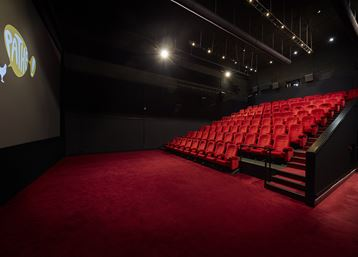
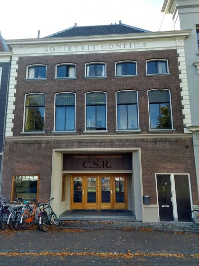

Ticketverkoop

Première in Pathé
Pathé Delft
Vesteplein 5, Delft
ma 7 maart, 20:00
€7,50
Black tie
Première in Pathé
Onder voorbehoud van de maatregelen omtrent corona, zal op 7 maart 20:00 de première plaatsvinden in Bioscoop Pathé Delft.
Dresscode: black tie.
Extra vertoning in Sociëteit Confide
Op een nader te bepalen datum, zal de film gratis vertoond worden in Sociëteit Confide, Oude Delft 9. Meer informatie volgt nog.

Vertoning in Confide
Confide, Oude Delft 9, Delft
Datum onbekend
Gratis
Ticketverkoop
Ons streven is om de ticketprijs zo laagdrempelig mogelijk te houden. Dankzij Gemeente Delft en TU Delft is dat ook mogelijk gebleken. Nu kunnen we u een filmervaring aanbieden voor €7,50.
Vanaf woensdag 10 februari zult u uw tickets hier kunnen bestellen
Lid van C.S.R. Delft?
Voor leden van C.S.R. Delft is het mogelijk te bestellen via de stek.
Bestel via de stek